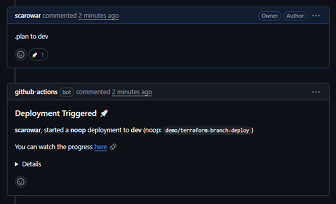
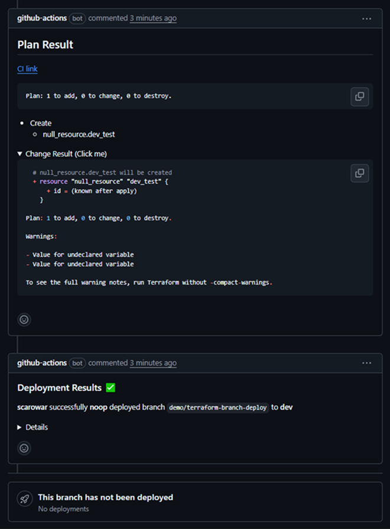
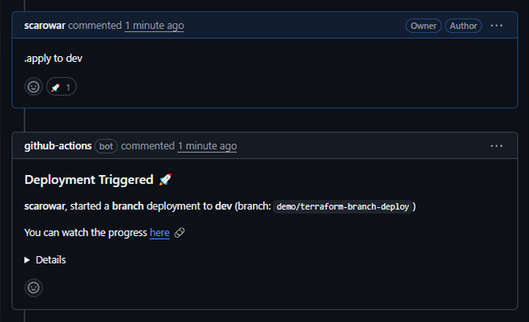
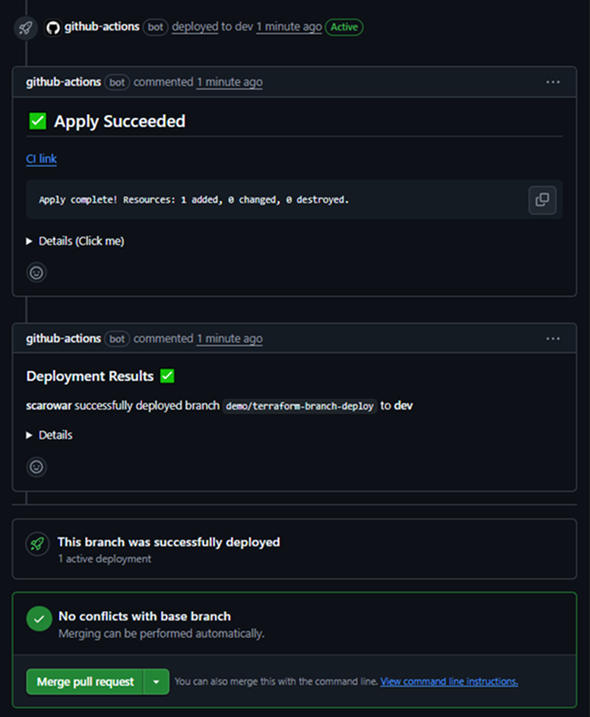

Terraform Branch Deploy


Overview
Terraform Branch Deploy extends branch-deploy with first-class support for Terraform infrastructure automation.
Key Features
- PR-driven automation: Trigger
planandapplyby commenting on pull requests. - Environment targeting: Define environments (dev, staging, prod, etc.) in
.tf-branch-deploy.ymlwith per-environment config, var files, and working directories. - Safe deployments: Preview every change with a Terraform plan before apply, and support instant rollbacks to a stable branch.
- Environment locking: Prevent concurrent or conflicting deployments with automatic and manual environment locks.
- Custom arguments: Pass extra Terraform CLI arguments from PR comments and fine-tune behavior per environment or globally via
.tf-branch-deploy.yml. - Enterprise ready: Works with GitHub Enterprise Server (GHES) and public GitHub, with automated GHES release tagging.
- Workflow integration: Use the
skipinput to extract environment context for advanced, multi-step workflows without running Terraform operations.
Workflow Example
See how easy it is to preview and deploy changes with Terraform Branch Deploy:

Comment .plan to dev on a pull request to start a Terraform plan for the dev environment.

The plan output is posted back to the pull request for review and approval.

After review, comment .apply to dev to initiate the deployment to the dev environment.

The apply output is posted back to the pull request, confirming the deployment results.
Need Help?
- Questions? Start a discussion
- Found a bug? Open an issue
- Security concern? See our security policy
Contributing
We'd love your help making Terraform Branch Deploy even better! Check out our contributing guide to get started.
License
MIT License - see LICENSE for details.
Made with  in Mysuru, India
in Mysuru, India